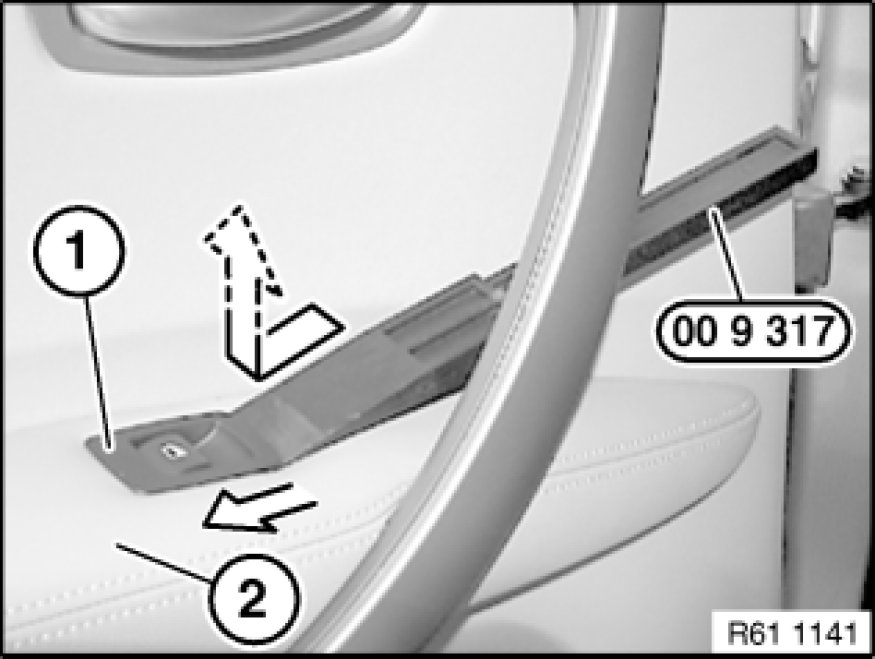
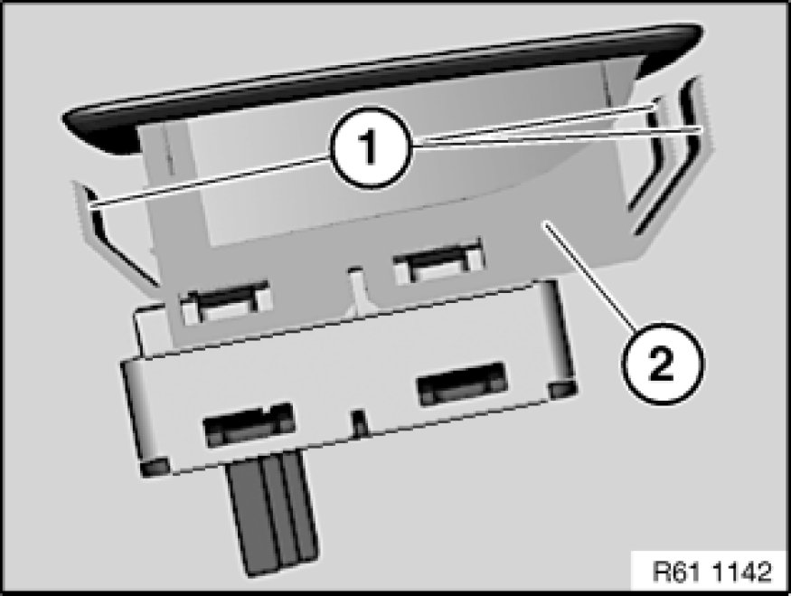

Replacing Rocker Switch for Side Window Operation (Rear)
61 31 116 - Replacing rocker switch for side window operation (rear)

Special tools required:
- 00 9 317 00 9 317 Trim Panel Wedge

Important!
Comply with the following work steps in order to avoid damaging the door trim panel and rocker switch.
To avoid damaging leather armrests, wrap front end of special tool 00 9 317 00 9 317 Trim Panel Wedge in fabric adhesive tape.
Procedure:
- Slide special tool 00 9 317 00 9 317 Trim Panel Wedge under rocker switch for side window operation (1) (do not lift the switch in the process).
- Slide rocker switch (1) with special tool 00 9 317 00 9 317 Trim Panel Wedge towards rear and lever out.
Feed rocker switch (1) out of rear door trim panel (2) and disconnect plug connection.

Installation Note:
Retaining hooks (1) of rocker switch for side window operation (2) must not be damaged.
Make sure rocker switch for side window operation (2) is correctly seated.